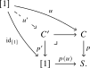
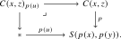
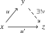
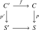
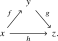

In this section, we introduce the notion of a locally (co)cartesian fibration. Our exposition closely follows that of [Lur, Section 5.1.3, 01TW].
Definition 4.8.1. Let \(p\colon C \to S\) be a functor, and consider a morphism \(u\colon x \to y\) in \(C\), say in context \(\Gamma\). This morphism uniquely lifts to a morphism \(u'\) in the category \(C'\) defined by the following pullback square in context \(\Gamma\):

One may dually define the notion of a locally \(p\)-cartesian morphism and the associated notion of locally cartesian fibrations.
Remark 4.8.2. Notice that the morphism \(u\colon x \to y\) is locally \(p\)-cocartesian if for every object \(z \in C_{p(y)}\) the functor \(v \mapsto vu\) given by composing with \(u\) induces an equivalence
\[
C_{p(y)}(y,z) \to C(x,z)_{p(u)},
\]
where \(C_{p(y)}\) is the fiber of \(p\) over \(p(y)\) and \(C(x,z)_{p(u)}\) is defined as the fiber
 
Example 4.8.3. Any \(p\)-cartesian morphism is locally \(p\)-cartesian.
Example 4.8.4. Any isomorphism is \(p\)-cartesian, hence in particular locally \(p\)-cartesian.
Example 4.8.5. Let \(A\) and \(B\) be two categories. A morphism \((u,v)\), consisting of a pair of morphisms \(u\colon x_0\to x_1\) and \(v\colon y_0\to y_1\) in \(A\) and \(B\), respectively, is locally \(\pr_A\)-cocartesian if and only if \(v\) is an isomorphism. To see this, we observe that \((u,\id_b)\colon (x_0,b)\to (x_1,b)\) is \(\pr_A\)-cocartesian for any object \(b\) by direct inspection of the universal properties. On the other hand, for any morphism \(u\colon x_0\to x_1\) in \(A\) any object of the form \((x_0,b)\) in \(A\times B\), the morphism \((u,\id_b)\) is a locally \(\pr_A\)-cocartesian lift of \(u\). This implies that a morphism of \(A\times B\) is \(\pr_A\)-cocartesian if and only if it is isomorphic to a morphism of the form \((u,\id_b)\) with \(v\) an isomorphism in \(B\). It is straightforward to see that the latter conditions characterizes the morphisms of \(A\times B\) whose second component is an isomorphism.
Observation 4.8.6. Consider a pullback square

Proposition 4.8.7. Let \(p\colon C \to S\) be a functor and let \(u\colon x \to y\) be a morphism in \(C\). Assume that \(p(u)\colon p(x) \to p(y)\) is an isomorphism in \(S\). Then the following conditions are equivalent:
(1) \(u\) is locally \(p\)-cocartesian;
(2) \(u\) is locally \(p\)-cartesian;
(3) \(u\) is an isomorphism in \(C\).
Proof
By the Rezk Axiom, the functor \(p(u)\colon [1]\to S\) is isomorphic to the constant functor at \(p(x)\). Pulling back \(p\) along these isomorphic functors identifies the lift of \(u\) with a morphism in the product projection \(C_{p(x)}\times[1]\to[1]\). By Example 4.8.5, this lift is locally cocartesian if and only if its component in \(C_{p(x)}\) is an isomorphism. The latter is equivalent to \(u\) being an isomorphism in \(C\). The dual argument gives the equivalence with local cartesianness.
Lemma 4.8.8. Assume that \(S = T^{\triangleright} = T \star [0]\) for some category \(T\). Let \(p\colon C \to T^{\triangleright}\) be a functor and let \(u\colon x \to y\) be a morphism in \(C\) such that \(p(y)\) is the cocone point of \(T^{\triangleright}\). Then \(u\) is locally \(p\)-cocartesian if and only if it is \(p\)-cocartesian.
Proof
Every \(p\)-cocartesian morphism is locally \(p\)-cocartesian. Conversely, suppose that \(u\) is locally \(p\)-cocartesian. There are no morphisms from the cocone point of \(T^{\triangleright}\) to an object coming from \(T\), since there is no morphism from \(1\) to \(0\) in \([1]\). Thus any morphism \(p(y)\to p(z)\) lies in the full subcategory \(\emptyset\star[0]\simeq[0]\) and is identified with the identity of the cocone point. The lifting problems in the definition of a \(p\)-cocartesian morphism therefore reduce to those over this identity. These are precisely the lifting problems in Remark 4.8.2, so \(u\) is \(p\)-cocartesian.
Corollary 4.8.9. Let \(p\colon C \to S\) be a functor and consider a commutative triangle \(\sigma\colon [2] \to C\) of the form

Proof
By pulling back along the map \(p(\sigma) \colon [2] \to S\) it will suffice to prove the claim when \(S = [2]\) and \(p(\sigma) = \id_{[2]}\). In this case Lemma 4.8.8 tells us that the morphisms \(g\) and \(h\) are locally \(p\)-cocartesian if and only if they are \(p\)-cocartesian. The claim thus follows from Lemma 4.5.12.
Lemma 4.8.10. Let \(p\colon C \to S\) be a cocartesian fibration. A morphism in \(C\) is locally \(p\)-cocartesian if and only if it is \(p\)-cocartesian.
Proof
Every \(p\)-cocartesian morphism is locally \(p\)-cocartesian. Conversely, let \(f\colon x\to y\) be a locally \(p\)-cocartesian morphism, and let \(g\colon x\to y'\) be the chosen \(p\)-cocartesian lift of \(p(f)\). Since both \(f\) and \(g\) are locally \(p\)-cocartesian lifts of \(p(f)\) with the same source, there is a unique isomorphism \(u\colon y'\to y\) in the fiber over \(p(y)\) such that \(f=ug\). Thus \(f\) is \(p\)-cocartesian.
Remark 4.8.11. Let \(p\colon C\to S\) be a cocartesian fibration. Given any morphism \(v\colon y_0\to y_1\) in \(S\) and any object \(x_0\) in \(C\) such that \(p(x_0)=y_0\), there is a (locally) \(p\)-cocartesian morphism \(u\colon x_0\to x_1\) in \(C\) such that \(p(u) = v\) in \(S(y_0,y_1)\). On the other hand, there is a functor \[ v_!\colon C_{y_0}\to C_{y_1} \] defined by covariant transport. Each object \(x_0\) of \(C_{y_0}\) comes with a canonical map \[ \varepsilon_{x_0}:=\lift_0^p(x_0,v)\colon x_0\to v_!(x_0) \] and there is a canonical map \(c_u\colon v_!(x_0)\to x_1\) in \(C_{y_1}\) such that \(c_u\varepsilon_{x_0}=u\) holds in \(C\). By uniqueness of locally \(p\)-cocartesian lifts, the property that \(u\) is a locally \(p\)-cocartesian lift of \(v\) is equivalent to the property that it is a \(p\)-cocartesian morphism in \(C\), which in turn means that \(c_u\) is an isomorphism in \(C\). In other words, every (locally) \(p\)-cocartesian morphism is isomorphic in \(\Fun([1],C)\) to a morphism of the form \(\varepsilon_{x_0}\) for some object \(x_0\) of \(C\) and some morphism \(v\) in \(S\) as above.